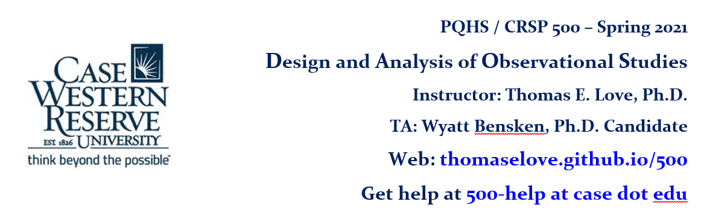

| LINK | Date | Time | Description |
|---|---|---|---|
| due | 03-02 | 9 PM | OSIA claims due via email to Dr. Love |
| Class 05 | 03-04 | 9:30 AM | Lecture 5 (matching, dm2200), Rosenbaum Chapters 5-6 |
| due | 03-09 | 9 PM | Project Proposal (initial draft) due to Canvas |
| due | 03-09 | 9 PM | Complete OSIA Second Reader Survey. See the claimed papers here. |
| due | 03-11 | 8 AM | Lab 3 due |
| Class 06 | 03-11 | 9:30 AM | Lecture 6 (Rubin 2001, rhc example), Read Rubin 2001, Lab 3 |
| due | 03-18 | 8 AM | Essay on Rosenbaum Chapter 7 |
| due | 03-18 | 8 AM | Lab 4 |
| Class 07 | 03-18 | 9:30 AM | Lecture 7 (sensitivity analysis), Rosenbaum Chapter 7, Lab 4 |
| due | 03-23 | 9 PM | Project Proposal (final version) due to Canvas |
| due | 03-24 | 3 PM | OSIA slides due for Class 8 First Readers: Carolyn, Caitlyn, Pamela, Julia, Lindsay |
| due | 03-25 | 8 AM | OSIA slides due for Class 8 Second Readers: Matt, Anastasia, Ritu, Amr, Stephanie |
| Class 08 | 03-25 | 8:30 AM | OSIA Day 1 (5 OSIA articles presented) |
| due | 03-31 | 3 PM | OSIA slides due for Class 9 First Readers: Anastasia, David, Long |
| LINK | Date | Description |
|---|---|---|
| due | 04-01 | Lab 5 due at 8 AM |
| due | 04-01 | 8 AM: OSIA slides due for Class 9 Second Readers: Carolyn, Rod, Jakob |
| due | 04-01 | 8 AM: Essay on Rosenbaum Chapter 8 |
| Class 09 | 04-01 | 9:30 AM start: Rosenbaum Chapter 8, OSIA Day 2 (3 articles) |
| due | 04-07 | 3 PM: OSIA slides due for Class 10 First Readers: Rod, Stephanie, Amr |
| due | 04-08 | 8 AM: OSIA slides due for Class 10 Second Readers: Caitlyn, Long, Julia |
| due | 04-08 | 8 AM: Essay on Rosenbaum Chapter 9 |
| Class 10 | 04-08 | 9:30 AM start: Rosenbaum Chapter 9, OSIA Day 3 (3 articles) |
| due | 04-14 | 3 PM: OSIA slides due for Class 11 First Readers: Jakob, Ritu, Matt |
| due | 04-15 | 8 AM: OSIA slides due for Class 11 Second Readers: Pamela, David, Lindsay |
| due | 04-15 | 8 AM: Essay on Rosenbaum Chapter 10 |
| Class 11 | 04-15 | 9:30 AM start: Rosenbaum Chapter 10, OSIA Day 4 (3 articles) |
| due | 04-20 | Project Update due to Canvas by 9 PM |
| due | 04-22 | 8 AM: Essay on Rosenbaum Chapter 11 |
| Class 12 | 04-22 | Lecture 9, Rosenbaum Chapter 11 |
| due | 04-29 | 8 AM: Essay on Rosenbaum Chapter 12 |
| Class 13 | 04-29 | Lecture 10, Rosenbaum Chapter 12 |
| LINK | Date | Time | Description |
|---|---|---|---|
| Class 14 | 05-06 | 8:30 - 11 | Project Presentations, Session 1 |
| Class 15 | 05-13 | 8:30 - 11 | Project Presentations, Session 2 |
Final Project Submissions will be due at noon on 2021-05-17.
During the course, we will read Paul Rosenbaum’s book Observation and Experiment: An Introduction to Causal Inference, which is available as an e-book or in paperback for under $25. Please buy the book and read the Preface and Chapter 1 before our first class on 2020-02-04.
Many other resources appear on the Sources page.
The teaching assistant for 500 is Wyatt Bensken. Wyatt is happy to hold office hours, by appointment. Email him at 500-help at case dot edu to set up an appointment or ask a question.
| LINK | Date | Time | Description |
|---|---|---|---|
| Class 01 | 02-04 | 8:30 AM | First Class Session, Rosenbaum Preface, Chapter 1 |
| due | 02-11 | 8 AM | Lab 1 due |
| Class 02 | 02-11 | 9:30 AM | Lecture 2, Rosenbaum Chapter 2 |
| due | 02-18 | 8 AM | Lab 2 due |
| Class 03 | 02-18 | 9:30 AM | Lecture 3, Rosenbaum Chapter 3 |
| Class 04 | 02-25 | 9:30 AM | Lecture 4, Rosenbaum Chapter 4, lindner and toy examples |
